Cache - a safe place to store things
คำว่า ``แคช'' (Cache) ใช้เรียก ลำดับชั้นของหน่วยความจำ ที่อยู่ระหว่างโปรเซสเซอร์ และหน่วยความจำหลัก ซึ่งปัจจุบัน คำว่าแคชใช้แทนอุปกรณ์เก็บข้อมูลใดๆ ที่สามารถใช้ประโยชน์จากพื้นฐานของ Locality ซึ่งหน่วยความจำแคชใช้งานอย่างแพร่หลายในส่วนของโปรเซสเซอร์ประสิทธิภาพสูง ถึงโปรเซสเซอร์ขนาดเล็ก
รูป 7.4 แสดงถึงหน่วยความจำแคชอย่างง่าย ก่อนและหลังการเรียกข้อมูล  ที่เมื่อเริ่มแรกไม่อยู่ในแคช ก่อนการเรียกใช้ข้อมูล แคชมีค่า
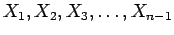 ในขณะที่
ที่เมื่อเริ่มแรกไม่อยู่ในแคช ก่อนการเรียกใช้ข้อมูล แคชมีค่า
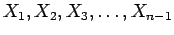 ในขณะที่  ไม่อยู่ในแคช เมื่อเกิดการ Miss ค่า
ไม่อยู่ในแคช เมื่อเกิดการ Miss ค่า  จะถูกนำจากหน่วยความจำหลักข้ามาในแคช ต่อไป
จะถูกนำจากหน่วยความจำหลักข้ามาในแคช ต่อไป
จากรูป 7.4 มีคำถามสองประการที่จะต้องตอบได้แก่
วิธีการที่ง่ายที่สุดในการกำหนดตำแหน่งของแอดเดรส ของแต่ละ Word ในหน่วยความจำในแคช โดยใช้การคำนวณ 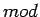 ของแอดเดรสในหน่วยความจำลงในแคช ซึ่งการทำการดังกล่าว เรียกว่า Direct Mapped ในโครงสร้างแคช มีการจัดสรรตำแหน่งเฉพาะในแคช สำหรับแอดเดรสหนึ่งๆ ในหน่วยความจำ โดยใช้สมการดังต่อไปนี้
| 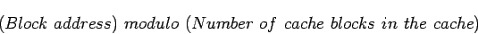 | (7.1) |
|
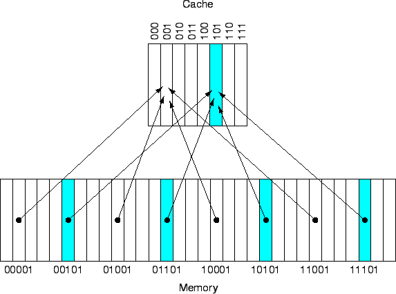
|
วิธีการกำหนดตำแหน่งระหว่างแคชกับหน่วยความจำในลักษณะนี้มีข้อดีคือความง่ายของวิธีการ ในกรณีที่หน่วยความจำแคชมีขนาดเป็นเลขของสองยกกำลัง การทำการ modulo สามารถทำได้โดยตรงโดยการตัดบิตทางซ้ายของแอดเอรส มาใช้ในการอ้างอิงตำแหน่งในหน่วยความจำแคช รูป 7.5 แสดงแอดเครสของหน่วยความจำระหว่าง 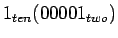 และ 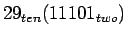 ที่ทำการเทียบกับตำแหน่ง 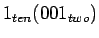 และ 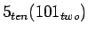 สำหรับแคชขนาด 8 words
เนื่องจากในแต่ละตำแหน่งของแคชสามารถบรรจุแอดเดรสได้หลายตำแหน่งแทนที่กัน วิธีการที่จะทำให้ทราบว่าแอดเดรสดังกล่าวเป็นของตำแหน่งใด แสดงโดยค่าของ Tag โดยที่ Tag จะเก็บส่วนที่เหลือของแอดเดรสเพื่อสำหรับตรวจสอบว่าตำแหน่งนั้นเป็นของแอดเดรสใด โดยการรวม Tag และตำแหน่งอ้างอิงในแคชเข้าด้วยกัน ในรูป 7.5 Tag จะมีขนาด 2 บิตจาก 5 บิตที่แสดงแอดเดรส นอกจากนี้ยังมี Valid บิต สำหรับชี้ว่าในแคชมีข้อมูลที่มีตรงและสามารถใช้งานได้ เมื่อเริ่มแรกในการเปิดเครื่อง Valid บิตจะถูกตั้งค่าให้เป็น 0 เพื่อเมื่อถูกใช้งานจะได้นำค่ามาจากหน่วยความจำในลำดับต่อไป
| Decimal address | Binary address | Hit or miss | Assigned cache block |
| of reference | of reference | in cache | (where found or placed |
| 22 | 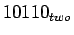 | miss | 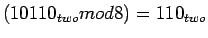 |
| 26 | |
miss | 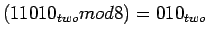 |
| 22 | hit | ||
| 26 | |
hit | |
| 16 | 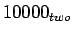 | miss | 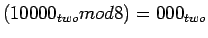 |
| 3 | 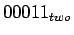 | miss | 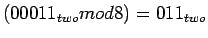 |
| 16 | hit | ||
| 18 | 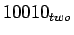 | miss | 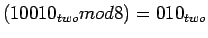 |
รูป 7.6 แสดงแอดเดรสที่แบ่งออกเป็น
|
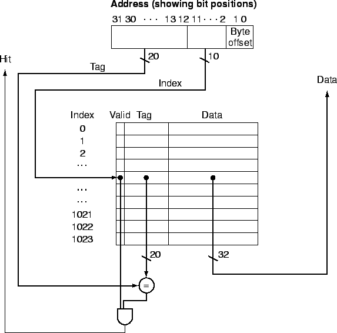
|
การอ้างอิงแคชประกอบกับ Tag ของ Block เป็นการระบบตำแหน่งของหน่วยความจำที่ต้องการใช้งาน เนื่องจากฟิลด์ index ใช้ในกาารอ้างอิง ขนาด  บิตของ index สามารถอ้างอิงได้ Word จะมีการจัดเรียงเป็น 4 bytes โดยจะไม่ใช้สองบิตสุดท้ายในการทำงานเนื่องจากเป็น Byte Offset
บิตของ index สามารถอ้างอิงได้ Word จะมีการจัดเรียงเป็น 4 bytes โดยจะไม่ใช้สองบิตสุดท้ายในการทำงานเนื่องจากเป็น Byte Offset
จำนวนบิตในแคช ขึ้นอยู่กับขนาดของแคช และขนาดของแอดเดรส เนื่องจากแคชประกอบด้วยทั้ง Data และ Tag Block หนึ่งๆ สามารถมีขนาดตั้งแต่หนึ่ง Word ถึงหลายๆ Word ถ้าสมมุติให้ขนาดของแอดเดรสมีขนาด 32 บิต ในการอ้างอิงข้อมูลขนาดหนึ่ง Byte และ ขนาดของ Direct Mapping มีขนาดเท่ากับ  Blocks ที่มีขนาด 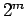 Words และ
Blocks ที่มีขนาด 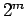 Words และ  ไบท์ โดยขนาดของฟิลด์ Tag เท่ากับ 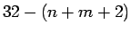 บิต เนื่องจากใช้
ไบท์ โดยขนาดของฟิลด์ Tag เท่ากับ 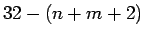 บิต เนื่องจากใช้  บิต สำหรับ index และ m บิต สำหรับการอ้างอิง Word ในแต่ละ Block และ 2 บิตสำหรับการอ้างอิง Byte ใน Word ขนาดของแคชจึงเท่ากับ
บิต สำหรับ index และ m บิต สำหรับการอ้างอิง Word ในแต่ละ Block และ 2 บิตสำหรับการอ้างอิง Byte ใน Word ขนาดของแคชจึงเท่ากับ

![\includegraphics[width=4in]{fig/Chapter_7/Figure_7.4.eps}](img391.png)